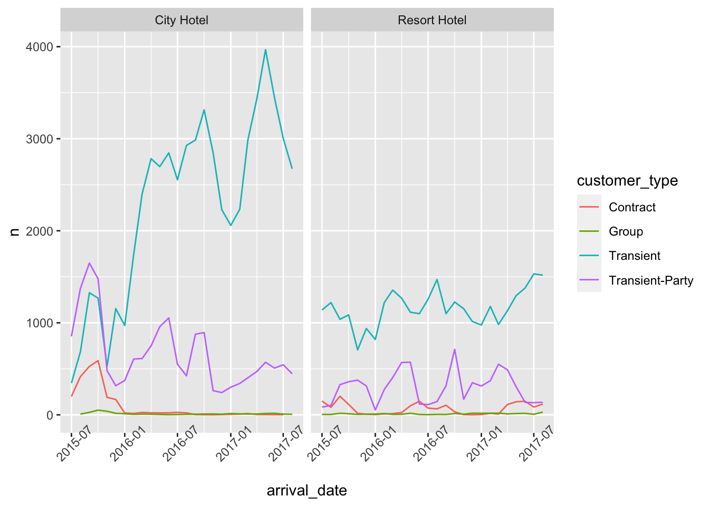
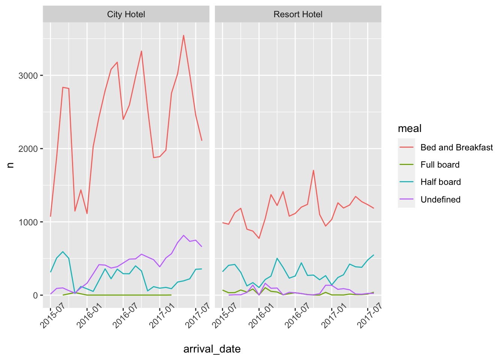
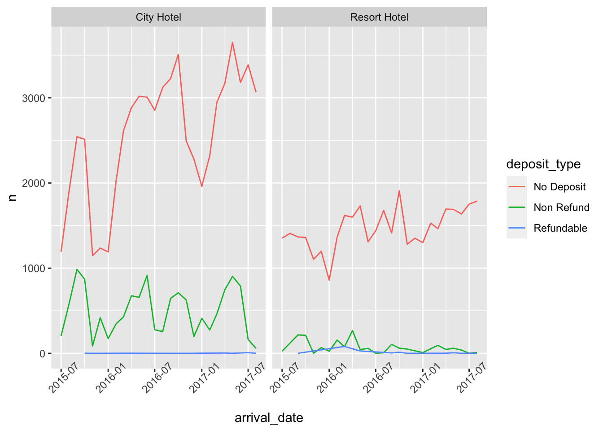

library(epiDisplay)
library(dbplyr)
library(tidyverse)
library(here)
library(lubridate)
library(summarytools)
library(ggplot2)
knitr::opts_chunk$set(echo = TRUE, warning=FALSE, message=FALSE)Challenge 7
challenge_7
hotel_bookings
australian_marriage
air_bnb
eggs
abc_poll
faostat
us_hh
Visualizing Multiple Dimensions
Challenge Overview
Today’s challenge is to:
- read in a data set, and describe the data set using both words and any supporting information (e.g., tables, etc)
- tidy data (as needed, including sanity checks)
- mutate variables as needed (including sanity checks)
- Recreate at least two graphs from previous exercises, but introduce at least one additional dimension that you omitted before using ggplot functionality (color, shape, line, facet, etc) The goal is not to create unneeded chart ink (Tufte), but to concisely capture variation in additional dimensions that were collapsed in your earlier 2 or 3 dimensional graphs.
- Explain why you choose the specific graph type
- If you haven’t tried in previous weeks, work this week to make your graphs “publication” ready with titles, captions, and pretty axis labels and other viewer-friendly features
R Graph Gallery is a good starting point for thinking about what information is conveyed in standard graph types, and includes example R code. And anyone not familiar with Edward Tufte should check out his fantastic books and courses on data visualizaton.
(be sure to only include the category tags for the data you use!)
Read in data
Read in one (or more) of the following datasets, using the correct R package and command.
- eggs ⭐
- abc_poll ⭐⭐
- australian_marriage ⭐⭐
- hotel_bookings ⭐⭐⭐
- air_bnb ⭐⭐⭐
- us_hh ⭐⭐⭐⭐
- faostat ⭐⭐⭐⭐⭐
dataset <- here("posts","_data","hotel_bookings.csv") %>%
read_csv()
dataset# A tibble: 119,390 × 32
hotel is_ca…¹ lead_…² arriv…³ arriv…⁴ arriv…⁵ arriv…⁶ stays…⁷ stays…⁸ adults
<chr> <dbl> <dbl> <dbl> <chr> <dbl> <dbl> <dbl> <dbl> <dbl>
1 Resor… 0 342 2015 July 27 1 0 0 2
2 Resor… 0 737 2015 July 27 1 0 0 2
3 Resor… 0 7 2015 July 27 1 0 1 1
4 Resor… 0 13 2015 July 27 1 0 1 1
5 Resor… 0 14 2015 July 27 1 0 2 2
6 Resor… 0 14 2015 July 27 1 0 2 2
7 Resor… 0 0 2015 July 27 1 0 2 2
8 Resor… 0 9 2015 July 27 1 0 2 2
9 Resor… 1 85 2015 July 27 1 0 3 2
10 Resor… 1 75 2015 July 27 1 0 3 2
# … with 119,380 more rows, 22 more variables: children <dbl>, babies <dbl>,
# meal <chr>, country <chr>, market_segment <chr>,
# distribution_channel <chr>, is_repeated_guest <dbl>,
# previous_cancellations <dbl>, previous_bookings_not_canceled <dbl>,
# reserved_room_type <chr>, assigned_room_type <chr>, booking_changes <dbl>,
# deposit_type <chr>, agent <chr>, company <chr>, days_in_waiting_list <dbl>,
# customer_type <chr>, adr <dbl>, required_car_parking_spaces <dbl>, …Briefly describe the data
This dataset describes the information of the reservations made in Resort Hotel and City Hotel. There are 119390 rows and 32 columns. Each columns represents various data such as for what dates and what hotel the booking was made, whether reservation is called or not and if the payment is made or not etc.
Tidy Data (as needed)
Is your data already tidy, or is there work to be done? Be sure to anticipate your end result to provide a sanity check, and document your work here.
The country column is placed in the 14th place, it should be moved up to 2nd place i.e after the hotel column. Created a new column arrival_date by getting the date from “arrival_date_day_of_month”, “arrival_date_month”,“arrival_date_year” columns. Removing these 3 columns and moving the arrival date column to column after “lead_time”. Creating the new column booking_date to know the date of booking with the information from columns lead_time and arrival_date. Created a new column “child” to get the total of children plus babies to replace the columns children and babies. Modifying the acronyms of the meal column values to full meal names for better understanding. After tidying up the data, total columns remaining are 28
dplyr::select(dataset, 3:7 )# A tibble: 119,390 × 5
lead_time arrival_date_year arrival_date_month arrival_date_week_nu…¹ arriv…²
<dbl> <dbl> <chr> <dbl> <dbl>
1 342 2015 July 27 1
2 737 2015 July 27 1
3 7 2015 July 27 1
4 13 2015 July 27 1
5 14 2015 July 27 1
6 14 2015 July 27 1
7 0 2015 July 27 1
8 9 2015 July 27 1
9 85 2015 July 27 1
10 75 2015 July 27 1
# … with 119,380 more rows, and abbreviated variable names
# ¹arrival_date_week_number, ²arrival_date_day_of_month#tidying the dataset
tidy_data <- dataset %>%
relocate("country",.after = "hotel") %>% #relocating the country column
mutate(arrival_date = (str_c("01",arrival_date_month,arrival_date_year, sep = "/")), arrival_date = dmy(arrival_date), .after = lead_time) %>% #variable for arrival date
mutate(booking_date = arrival_date-days(lead_time), .after = lead_time) %>% #variable to know the date of booking
mutate(childs = children + babies, .after = adults) %>%
mutate(meal=recode(meal,
BB="Bed and Breakfast",
FB="Full board",
HB="Half board",
SC="Undefined")) %>%
dplyr::select(-c("lead_time","children","babies"))
tidy_data <- tidy_data[,-6:-9] #removed columns with arrival date information
tidy_data# A tibble: 119,390 × 28
hotel country is_ca…¹ booking_…² arrival_…³ stays…⁴ stays…⁵ adults childs
<chr> <chr> <dbl> <date> <date> <dbl> <dbl> <dbl> <dbl>
1 Resort H… PRT 0 2014-07-24 2015-07-01 0 0 2 0
2 Resort H… PRT 0 2013-06-24 2015-07-01 0 0 2 0
3 Resort H… GBR 0 2015-06-24 2015-07-01 0 1 1 0
4 Resort H… GBR 0 2015-06-18 2015-07-01 0 1 1 0
5 Resort H… GBR 0 2015-06-17 2015-07-01 0 2 2 0
6 Resort H… GBR 0 2015-06-17 2015-07-01 0 2 2 0
7 Resort H… PRT 0 2015-07-01 2015-07-01 0 2 2 0
8 Resort H… PRT 0 2015-06-22 2015-07-01 0 2 2 0
9 Resort H… PRT 1 2015-04-07 2015-07-01 0 3 2 0
10 Resort H… PRT 1 2015-04-17 2015-07-01 0 3 2 0
# … with 119,380 more rows, 19 more variables: meal <chr>,
# market_segment <chr>, distribution_channel <chr>, is_repeated_guest <dbl>,
# previous_cancellations <dbl>, previous_bookings_not_canceled <dbl>,
# reserved_room_type <chr>, assigned_room_type <chr>, booking_changes <dbl>,
# deposit_type <chr>, agent <chr>, company <chr>, days_in_waiting_list <dbl>,
# customer_type <chr>, adr <dbl>, required_car_parking_spaces <dbl>,
# total_of_special_requests <dbl>, reservation_status <chr>, …Are there any variables that require mutation to be usable in your analysis stream? For example, do you need to calculate new values in order to graph them? Can string values be represented numerically? Do you need to turn any variables into factors and reorder for ease of graphics and visualization?
Document your work here.
Three additional data frames have been constructed to get the statistics of number of customer_types, number of meals and number of deposit_types when grouping the data based on the month of arrival and hotel type.
#counting the various customer types
customers <- tidy_data %>%
group_by(hotel, arrival_date, customer_type) %>%
count(arrival_date, hotel, customer_type,.drop=F)
customers# A tibble: 201 × 4
# Groups: hotel, arrival_date, customer_type [201]
hotel arrival_date customer_type n
<chr> <date> <chr> <int>
1 City Hotel 2015-07-01 Contract 200
2 City Hotel 2015-07-01 Transient 345
3 City Hotel 2015-07-01 Transient-Party 853
4 City Hotel 2015-08-01 Contract 415
5 City Hotel 2015-08-01 Group 8
6 City Hotel 2015-08-01 Transient 684
7 City Hotel 2015-08-01 Transient-Party 1373
8 City Hotel 2015-09-01 Contract 526
9 City Hotel 2015-09-01 Group 27
10 City Hotel 2015-09-01 Transient 1327
# … with 191 more rows#counting various meal types
meals <- tidy_data %>%
group_by(hotel, arrival_date, meal) %>%
count(arrival_date, hotel, meal,.drop=F)
meals# A tibble: 190 × 4
# Groups: hotel, arrival_date, meal [190]
hotel arrival_date meal n
<chr> <date> <chr> <int>
1 City Hotel 2015-07-01 Bed and Breakfast 1071
2 City Hotel 2015-07-01 Half board 312
3 City Hotel 2015-07-01 Undefined 15
4 City Hotel 2015-08-01 Bed and Breakfast 1881
5 City Hotel 2015-08-01 Half board 507
6 City Hotel 2015-08-01 Undefined 92
7 City Hotel 2015-09-01 Bed and Breakfast 2836
8 City Hotel 2015-09-01 Full board 1
9 City Hotel 2015-09-01 Half board 593
10 City Hotel 2015-09-01 Undefined 99
# … with 180 more rows#counting various deposit types
deposits <- tidy_data %>%
group_by(hotel, arrival_date, deposit_type) %>%
count(arrival_date, hotel, deposit_type,.drop=F)
deposits# A tibble: 122 × 4
# Groups: hotel, arrival_date, deposit_type [122]
hotel arrival_date deposit_type n
<chr> <date> <chr> <int>
1 City Hotel 2015-07-01 No Deposit 1193
2 City Hotel 2015-07-01 Non Refund 205
3 City Hotel 2015-08-01 No Deposit 1900
4 City Hotel 2015-08-01 Non Refund 580
5 City Hotel 2015-09-01 No Deposit 2543
6 City Hotel 2015-09-01 Non Refund 986
7 City Hotel 2015-10-01 No Deposit 2514
8 City Hotel 2015-10-01 Non Refund 870
9 City Hotel 2015-10-01 Refundable 2
10 City Hotel 2015-11-01 No Deposit 1147
# … with 112 more rowsVisualization with Multiple Dimensions
This visualization plots how many different type of customers are booking their stays in the city hotel and resort hotel over the time.
#customer_type plots
ggplot(customers,aes(arrival_date, n, col=customer_type))+
geom_line()+
facet_wrap(vars(hotel))+
scale_x_date()+
theme(axis.text.x=element_text(angle=45))
This visualization plots how many different type of meals the customers are booking during their stays in the city hotel and resort hotel over the time.
#meals plots
ggplot(meals,aes(arrival_date, n, col=meal))+
geom_line()+
facet_wrap(vars(hotel))+
scale_x_date()+
theme(axis.text.x=element_text(angle=45))
This visualization plots how many different type of customers like to pay for their bookings in the city hotel and resort hotel over the time.
#deposits plots
ggplot(deposits,aes(arrival_date, n, col=deposit_type))+
geom_line()+
facet_wrap(vars(hotel))+
scale_x_date()+
theme(axis.text.x=element_text(angle=45))